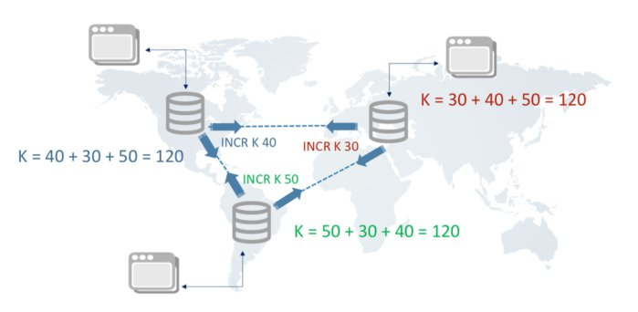
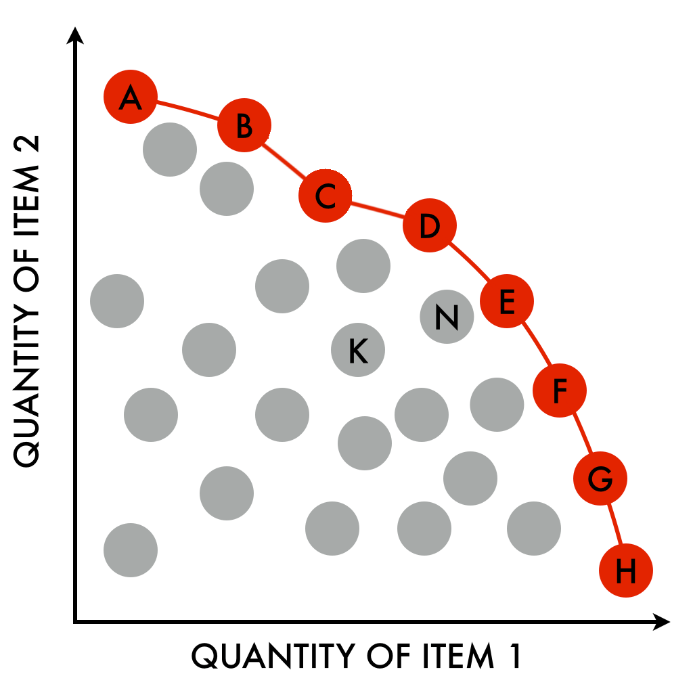

What is Scale
If we change our input (resources or tools), how does our output change proportionally?
- hardware (vertical): more CPU, bigger disk, faster networks
- software (horizontal): functional decomposition, duplication, partitioning
- internal organization (cultural fit) and external hiring pool

Scale Cube
Three dimensions of scaling
Functional decomposition

Micro services, Kafka topics
Duplication

Caching, replication factor in Kafka partitions
Partitioning

multi vs single tenancy, leader election
CAP Theorem and Redis
Master Slave architecture
Actor model, CQRS?
PACELC and Consul
CRDT's and NewSQL
Cosmos DB, VoltDB, Google Spanner, SAP Hana DB

Economies and efficiencies of Scale
